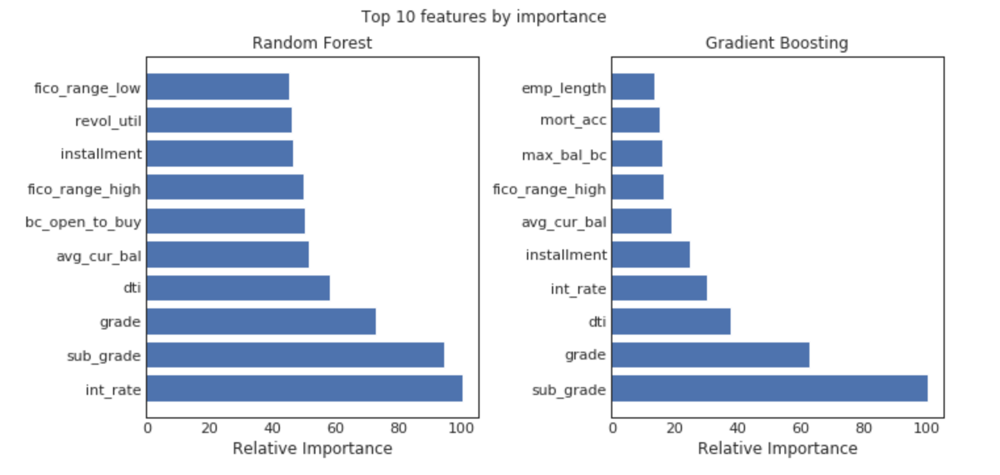
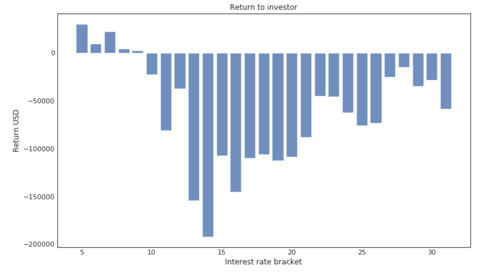
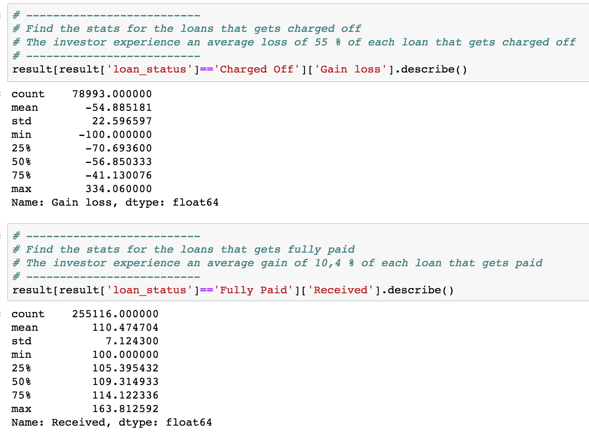
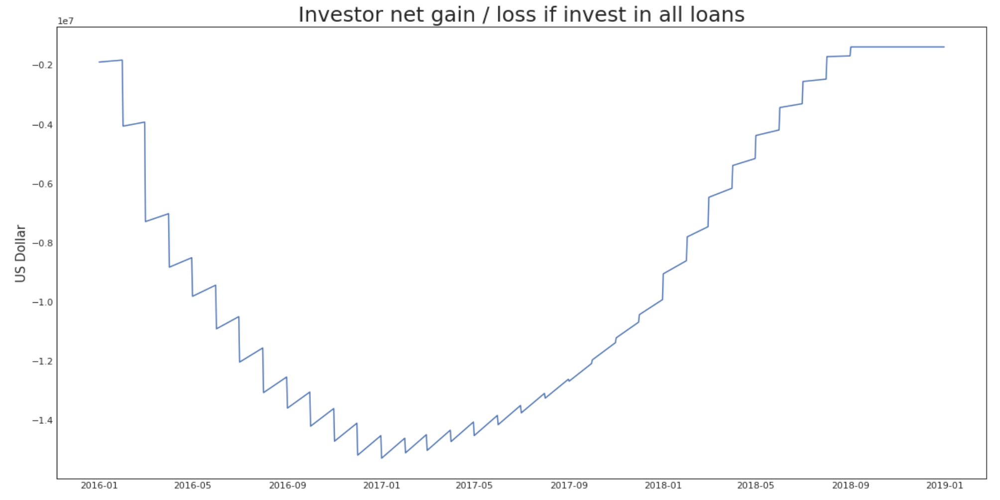
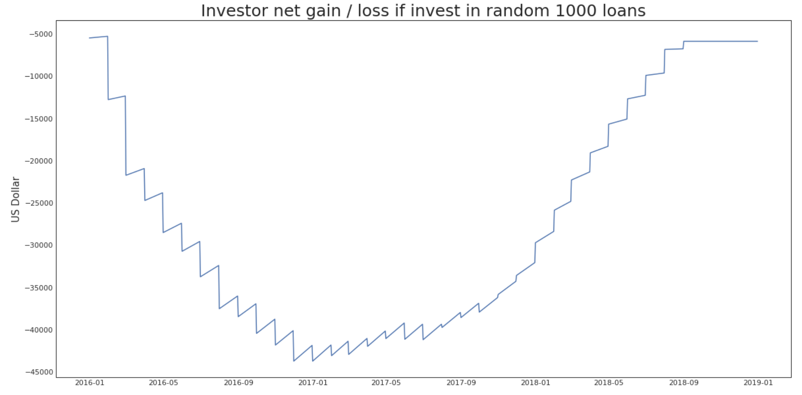
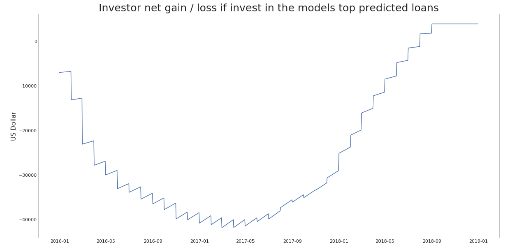

Conclusion
Considering we have only looked at the 2016 - 2017 data and due to the reasons explained in our initial project approach, we arrived at the following conclusions:
Important investment features
If an investor were to decide to invest their money in LendigClub, some of the most important features to consider when doing so, would be variables like the ones below, which resulted from running for example a random forest and gradient boosting calculation and looking at the relative importance of the features:

Investment strategies
From the calculations under "Expected Returns" we can observe several interesting things. For instance...
If a potential investor were to invest $100 in every one of the roughly 334,000 loans we looked at, he would lose money overall, mostly due to the loans with high interest rates (higher than 10%). See image below.

Investors would lose on average 55% of their invested capital if they invested in a loan that was charged off. However, if they invested in a loan that was fully paid back, they would gain about 10.4% of their invested capital on average.

We also did some calculations on potential investment strategies. Based on that, we've created 3 scenarios:- An investor invests $100 in every one of the 334,000 loans
- An investor invests $100 in 1000 random loans
- An investor invests $100 in the top 1000 loans based on our prediction model
Those 3 investment strategies would then lead to the following results:
- The investor who invested 100 USD in every possible loan would need to invest $15,284,048 and would end up with a loss of $1,397,878 on December 31th 2018, which is a loss of 9.1%
- The investor who invested 100 USD in 1000 random loans would need to invest about $43,753 and would still end up with a $5,898 loss on December 31th 2018, which is a 13.4% loss.
- The investor who invested 100 USD in top 1000 loans according to our model will need to invest $41,837 overall and would end up with a profit of $3,920 on December 31th 2018, which equals 9.4%
Now, even though it looks like strategy 1 loses less percentage wise than strategy 2, the first investor would've had to invest almost 355 times more money than the second, which is quite significant. If that second investor invested the same amount the first one invested but in our 1000 best loans, that investor would end up with a profit of $1,391,140 on December 31th 2018.
Please find more details on these calculation at the end of our models notebook.
On top of that, we did some calculations on the investor's Cash-Flow across the 2017 - 2018 timeframe. The graphs will show how the cash-flow is spread out over that timeframe. As one can see, the investor needs to put out an outlay at first but will then gradually receive money back as interest and installments accrue, as well as when loans gets paid back.
However, there are some limitations in the dataset that required us to make a few assumptions:- All loans are paid out the first of the month
- The loans are paid back in daily installments as long as the loan is running
- The loans pay the investor daily interest
- Fees, taxes, inflation and time-value of money is not included in the calculations
Please find the graphs of the 3 investor's Cash-Flows over the entire time period below.



Fairness metrics
We implemented a selection of the fairness metrics from the IBM algorithm directly, which include the following metrics for each model:- Equal opportunity: the difference between the ratio of true positives to positive examples for the protected vs unprotected groups
- Predictive equality: the difference in accuracy of predictions for the protected vs unprotected groups
- Statistical parity: the difference in proportion of positive classifications in the protected vs unprotected groups
We decided to look at two potential discriminating factors, age and race.
When looking at age, we assume that the earliest credit line is a good proxy for age and that people get their first line of credit at about 18 years old. That would allow an algorithm to derive their current age and make decisions based on that. In this case the results show that our model slightly favours older loan applicants (it has positive values for the fairness metrics).
On the other hand, when looking at race, even though the LendingClub data does not contain any race related information directly, our model might still indirectly discriminate against race based on the location (zip-code) of a loan applicant. When using data from the US census and aggregating the information up to the 3 first digits of the zip-code, to be compatable with the Lending Club data, we would have additional information about what percentage of the population in that zip-code area is black or any other race. If our model were to reject loans from zip-code xyz and that area has a higher percentage of black population compared to the state or country, this could be considered discrimination.
This shows that there is a tiny racial bias in our model. However, due to the limitations in the dataset, with only the three first digits of the zip-code available, the accuracy is not that good. As these zip-areas are very large, and hence very diverse, that makes it harder to test for bias. Many of these zip-areas include some of Americas poorest areas, but at the same time they include areas with high levels of income, percentage of graduate level degrees and so forth. Hence there are a chance that some zip-codes within these areas are discriminated against, while other zip-codes (areas) are treated positively. But with the lack of granularity in our data, it is not possible to conclude.
Further work
There are several ideas we've discussed to further detail our work but due to the limited time and resources was not done in this project.
- One way of improving predictions would be to stack or combine models instead of only looking at performances of individual models. This has the potential of generating better overall performance but would probably also reduce interpretability of the resulting model. Since interpretability was important in this project, we chose not to follow this approach.
- Another way to increase performance would've been by using more advanced models like Neural Networks. However, although this may improve performance, it's most likely also going to reduce interpretability and due to the reason explained above, we didn't further follow this Neural Network approach.
- Regarding fairness, there are many other potential fairness metrics that could be derived from the census data, including different ways to identify race (comparing to the US as a whole rather than the individual state, or looking at different minority groups), as well as other potential sensitive characteristics like poverty and single households. These could be explored in further work.